Hex Mill gallery
Every parameter Hex Mill offers, shown one at a time. Each image is a real SVG, so you can open it in Inkscape, plot it, or load it into hexmill.html to see its settings. Only the changes from a 150 × 105 mm, 7 × 5 base example are listed.
Working out the size Page, hex size and hex count can't all be set freely, so you fix two and Hex Mill works out the third. All sizes refer to the theoretical lattice and ignore the inset.
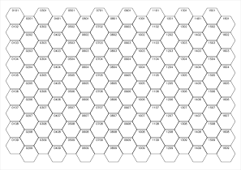
Work out hex count A4 and 20 mm hexes are fixed. Hex Mill fits as many as it can.
16 × 9, 144 hexes, 779 strokes, 13.12 m pen down
{"page":{"paper":"A4","width":null,"height":null},"lattice":{"solve":"count","size":20}}
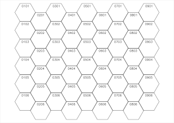
Work out hex size A4 and 9 × 6 hexes are fixed. Hex Mill finds the largest hex that fits.
9 × 6, 54 hexes, 291 strokes, 7.62 m pen down
{"page":{"paper":"A4","width":null,"height":null},"lattice":{"solve":"size","columns":9,"rows":6}}
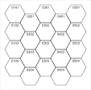
Work out page size 5 × 4 hexes at 22 mm are fixed. The page wraps the map plus its margins.
5 × 4, 20 hexes, 109 strokes, 2.00 m pen down
{"lattice":{"solve":"page","columns":5,"rows":4,"size":22}}
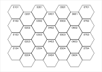
Size by flat to flat 20 mm between opposite flat sides.
7 × 4, 28 hexes, 155 strokes, 2.56 m pen down
{"lattice":{"solve":"count","measure":"flat","size":20}}
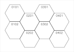
Size by edge length 20 mm along one edge, so a much larger hex.
4 × 2, 8 hexes, 42 strokes, 1.25 m pen down
{"lattice":{"solve":"count","measure":"edge","size":20}}
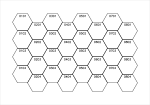
Size by corner to corner 20 mm between opposite corners.
8 × 4, 32 hexes, 176 strokes, 2.54 m pen down
{"lattice":{"solve":"count","measure":"corner","size":20}} Page, margins and alignment The blue guides show the margins and the map edge. When hexes don't fill the area inside the margins, alignment decides where the leftover space goes.
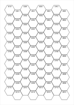
Named paper, portrait A5 in portrait.
8 × 10, 80 hexes, 436 strokes, 6.65 m pen down
{"page":{"paper":"A5","orientation":"portrait","width":null,"height":null},"lattice":{"solve":"count","size":18}}
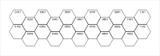
Custom paper A long 200 × 70 mm strip.
11 × 2, 22 hexes, 114 strokes, 1.79 m pen down
{"page":{"paper":"Custom","width":200,"height":70},"lattice":{"solve":"count","size":18}}
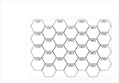
Different margins per side Wide left and top margins, narrow right and bottom.
7 × 4, 28 hexes, 155 strokes, 2.06 m pen down
{"margins":{"top":22,"right":5,"bottom":5,"left":34},"lattice":{"solve":"count","size":16},"decorators":{"guides":true}}
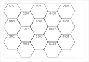
Aligned top left All leftover space goes to the right and bottom.
5 × 3, 15 hexes, 78 strokes, 1.78 m pen down
{"lattice":{"solve":"count","size":26,"align":{"x":"start","y":"start"}},"decorators":{"guides":true}}
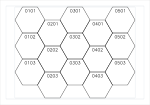
Centred The default: leftover space is split evenly.
5 × 3, 15 hexes, 78 strokes, 1.78 m pen down
{"lattice":{"solve":"count","size":26,"align":{"x":"center","y":"center"}},"decorators":{"guides":true}}
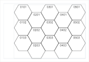
Aligned bottom right All leftover space goes to the left and top.
5 × 3, 15 hexes, 78 strokes, 1.78 m pen down
{"lattice":{"solve":"count","size":26,"align":{"x":"end","y":"end"}},"decorators":{"guides":true}} Layouts One setting covers orientation and stagger, using the Red Blob Games names. Columns are q and rows are r, both counted from 0.
odd-q Flat-top. Odd columns are shoved down.
7 × 5, 35 hexes, 192 strokes, 2.72 m pen down
{"lattice":{"layout":"odd-q"}}
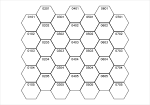
even-q Flat-top. Even columns are shoved down.
7 × 5, 35 hexes, 192 strokes, 2.72 m pen down
{"lattice":{"layout":"even-q"}}
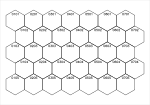
odd-r Pointy-top. Odd rows are shoved right.
7 × 5, 35 hexes, 192 strokes, 2.94 m pen down
{"lattice":{"layout":"odd-r"}}
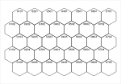
even-r Pointy-top. Even rows are shoved right.
7 × 5, 35 hexes, 192 strokes, 2.94 m pen down
{"lattice":{"layout":"even-r"}} Map edges Hexes can stay whole, or be cut along a straight map edge. Cut hexes are real geometry, not an SVG clip, so a plotter draws them correctly.
Whole hexes The default, with ragged edges.
7 × 5, 35 hexes, 192 strokes, 2.72 m pen down
{}
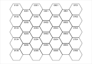
Short lines Shoved columns lose one hex, which flattens the bottom edge.
7 × 5, 32 hexes, 176 strokes, 2.70 m pen down
{"lattice":{"shortLines":true}}
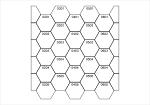
Cut ends The first and last columns are cut in half.
7 × 5, 35 hexes, 145 strokes, 2.42 m pen down
{"lattice":{"cutEnds":true}}
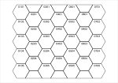
Cut ragged sides The top and bottom are straight, leaving half-hexes in alternate columns.
7 × 5, 38 hexes, 182 strokes, 3.03 m pen down
{"lattice":{"cutRagged":true}}
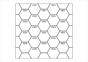
Cut all sides, closed Cut hexes are closed along the map edge, giving a straight border.
7 × 5, 38 hexes, 135 strokes, 2.70 m pen down
{"lattice":{"cutEnds":true,"cutRagged":true,"closePartials":true}}
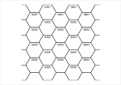
Cut all sides, open Cut hexes are left open, so no border is drawn.
7 × 5, 38 hexes, 135 strokes, 2.39 m pen down
{"lattice":{"cutEnds":true,"cutRagged":true,"closePartials":false}}
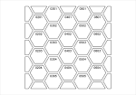
Closed, with inset The closing line respects the inset like every other edge.
7 × 5, 38 hexes, 135 strokes, 2.42 m pen down
{"lattice":{"cutEnds":true,"cutRagged":true,"closePartials":true},"render":{"inset":1}}
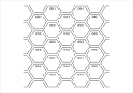
Open, with inset Open cuts run right to the map edge.
7 × 5, 38 hexes, 135 strokes, 2.18 m pen down
{"lattice":{"cutEnds":true,"cutRagged":true,"closePartials":false},"render":{"inset":1}}
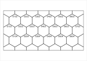
Cut all sides, pointy-top The same options work in r layouts.
7 × 5, 37 hexes, 123 strokes, 2.71 m pen down
{"lattice":{"layout":"odd-r","cutEnds":true,"cutRagged":true}} Drawing An inset i draws each hex smaller than its lattice cell. The channel between neighbours is 2i, and the visible paper gap is 2i minus the pen width.
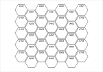
Inset 0.5 mm A 1 mm channel between hexes.
7 × 5, 35 hexes, 192 strokes, 2.60 m pen down
{"render":{"inset":0.5}}
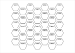
Inset 1.5 mm A 3 mm channel between hexes.
7 × 5, 35 hexes, 192 strokes, 2.36 m pen down
{"render":{"inset":1.5}}
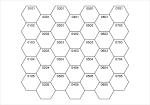
Simplified Duplicate lines removed and the rest chained into the fewest strokes. Compare the pen-down length with the whole-hex example above.
7 × 5, 35 hexes, 191 strokes, 1.92 m pen down
{"render":{"simplify":true}}
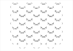
Corners only Short ticks at each corner, 2 mm long by default.
7 × 5, 35 hexes, 367 strokes, 1.51 m pen down
{"render":{"style":"corners"}}
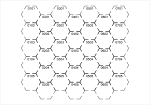
Longer corners Corner length raised to 3.5 mm.
7 × 5, 35 hexes, 367 strokes, 2.14 m pen down
{"render":{"style":"corners","cornerLength":3.5}}
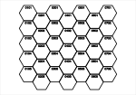
Pen width 0.8 mm Sets the stroke shown on screen, and the paper gap Hex Mill reports. It doesn't change the geometry.
7 × 5, 35 hexes, 192 strokes, 2.72 m pen down
{"render":{"penWidth":0.8}} Label numbering Each scheme is a format string with %c and %r for numbers, %C and %R for letters, %h for half-lines and %n for serial numbers.
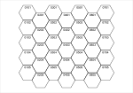
Column-row The classic four-digit form, and the default.
7 × 5, 35 hexes, 192 strokes, 2.72 m pen down
{"labels":{"preset":"xxyy"}}
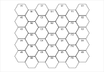
Letter-number Lettered columns, numbered rows.
7 × 5, 35 hexes, 167 strokes, 2.38 m pen down
{"labels":{"preset":"letter-number"}}
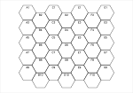
18xx, flat-top Columns are lettered. Numbers step by two down a column and alternate between columns.
7 × 5, 35 hexes, 170 strokes, 2.41 m pen down
{"labels":{"preset":"18xx"}}
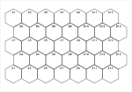
18xx, pointy-top Rows are lettered. Numbers step by two along a row and alternate between rows.
7 × 5, 35 hexes, 180 strokes, 2.63 m pen down
{"lattice":{"layout":"odd-r"},"labels":{"preset":"18xx"}}
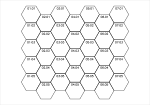
Dotted A separator between column and row.
7 × 5, 35 hexes, 227 strokes, 2.74 m pen down
{"labels":{"preset":"dotted"}}
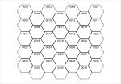
Serial, along rows One running count.
7 × 5, 35 hexes, 182 strokes, 2.73 m pen down
{"labels":{"preset":"serial"}}
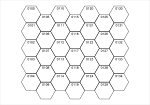
Serial, down columns Counting from 100, down each column.
7 × 5, 35 hexes, 182 strokes, 2.64 m pen down
{"labels":{"preset":"serial","serialOrder":"col","start":{"serial":100}}}
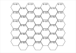
Custom format Literal text works too: here a sheet prefix.
7 × 5, 35 hexes, 342 strokes, 2.88 m pen down
{"labels":{"preset":"custom","format":"B-%C%02r"}}
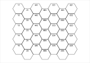
Past Z: tally Starting at column 25: Y, Z, AA, BB, CC.
7 × 5, 35 hexes, 232 strokes, 2.52 m pen down
{"labels":{"preset":"letter-number","letters":"tally","start":{"col":25}}}
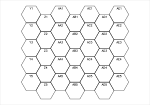
Past Z: spreadsheet Starting at column 25: Y, Z, AA, AB, AC.
7 × 5, 35 hexes, 242 strokes, 2.50 m pen down
{"labels":{"preset":"letter-number","letters":"spreadsheet","start":{"col":25}}}
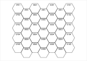
Origin top right Columns count from the right.
7 × 5, 35 hexes, 192 strokes, 2.72 m pen down
{"labels":{"origin":"ur"}}
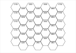
Origin bottom left Rows count up from the bottom.
7 × 5, 35 hexes, 192 strokes, 2.72 m pen down
{"labels":{"origin":"ll"}}
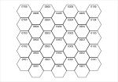
Origin bottom right Both axes are reversed.
7 × 5, 35 hexes, 192 strokes, 2.72 m pen down
{"labels":{"origin":"lr"}}
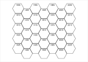
Start and step Columns count 10, 12, 14. Rows count 5, 10, 15.
7 × 5, 35 hexes, 180 strokes, 2.67 m pen down
{"labels":{"start":{"col":10,"row":5},"step":{"col":2,"row":5}}}
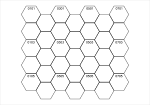
Every second hex Fewer labels means far fewer pen lifts.
7 × 5, 35 hexes, 86 strokes, 2.27 m pen down
{"labels":{"every":2}}
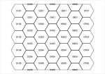
Label cut hexes Off by default. Half-hexes at the top number as row 0.
7 × 5, 38 hexes, 208 strokes, 3.16 m pen down
{"lattice":{"cutRagged":true},"labels":{"labelPartials":true,"distance":0}}
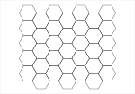
No labels Labels switched off.
7 × 5, 35 hexes, 35 strokes, 2.05 m pen down
{"labels":{"enabled":false}} Label style Labels are stroke fonts drawn as plain paths. Size is the height of a digit in mm. Bearing and distance place the label from the hex centre, and rotation turns it.
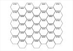
Hershey Script One of 41 built-in fonts.
7 × 5, 35 hexes, 525 strokes, 3.26 m pen down
{"labels":{"font":"HersheyScript1"}}
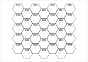
Hershey Gothic A multi-stroke font, so it takes much longer to plot.
7 × 5, 35 hexes, 1208 strokes, 3.63 m pen down
{"labels":{"font":"HersheyGothEnglish"}}
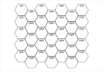
EMS Tech One of the modern EMS fonts.
7 × 5, 35 hexes, 175 strokes, 2.75 m pen down
{"labels":{"font":"EMSTech"}}
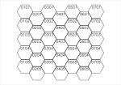
Digit height 3 mm The default is about 11% of flat to flat.
7 × 5, 35 hexes, 192 strokes, 3.11 m pen down
{"labels":{"size":3}}
In the centre Distance 0.
7 × 5, 35 hexes, 192 strokes, 2.72 m pen down
{"labels":{"distance":0}}
At the bottom Bearing 180°, measured clockwise from up.
7 × 5, 35 hexes, 192 strokes, 2.72 m pen down
{"labels":{"bearing":180}}
Rotated Rotation 90°, placed on the right with bearing 90°.
7 × 5, 35 hexes, 192 strokes, 2.72 m pen down
{"labels":{"rotation":90,"bearing":90,"distance":5}}
Anchor start The text starts at the placement point.
7 × 5, 35 hexes, 262 strokes, 2.83 m pen down
{"labels":{"anchor":"start","distance":0},"decorators":{"centre":"cross","centreSize":1.5}}
Anchor end The text ends at the placement point.
7 × 5, 35 hexes, 262 strokes, 2.83 m pen down
{"labels":{"anchor":"end","distance":0},"decorators":{"centre":"cross","centreSize":1.5}} Decorators Each decorator has its own layer, so it can be plotted separately or switched off in Inkscape.
Centre dots A dot is a tiny real path, so it plots.
7 × 5, 35 hexes, 227 strokes, 2.79 m pen down
{"decorators":{"centre":"dot"}}
Centre crosses Size raised to 2 mm.
7 × 5, 35 hexes, 262 strokes, 2.86 m pen down
{"decorators":{"centre":"cross","centreSize":2}}
Registration marks Crosses just outside the map corners, for lining up pens or sheets.
7 × 5, 35 hexes, 200 strokes, 2.28 m pen down
{"margins":{"top":14,"right":14,"bottom":14,"left":14},"decorators":{"registration":true,"registrationOffset":5,"registrationSize":6}}
Guides layer Margins, map edge and theoretical lattice. Named with %, so AxiDraw never plots it.
7 × 5, 35 hexes, 192 strokes, 2.36 m pen down
{"render":{"inset":1.5},"decorators":{"guides":true}} Warnings These still produce a file, but Hex Mill tells you about the problem.
Page exceeds plotter travel A2 is too big for the AxiDraw SE/A3 either way round. A3 portrait fits, because the plotter software turns it.
The page (420 × 594 mm) exceeds the AxiDraw SE/A3 travel of 430 × 297 mm, either way round.
15 × 18, 270 hexes, 1464 strokes, 36.27 m pen down
{"page":{"paper":"A2","orientation":"portrait","width":null,"height":null},"lattice":{"solve":"count","size":30}}
Choosing a plotter NextDraw and AxiDraw models are built in. A3 is too big for a NextDraw 8511.
The page (420 × 297 mm) exceeds the NextDraw 8511 travel of 300 × 218 mm, either way round.
15 × 9, 135 hexes, 732 strokes, 18.46 m pen down
{"page":{"paper":"A3","orientation":"landscape","width":null,"height":null},"lattice":{"solve":"count","size":30},"plotter":{"name":"NextDraw 8511","width":300,"height":218}}
Custom travel limit The limit can be set for any other plotter.
The page (150 × 105 mm) exceeds the custom plotter travel of 120 × 90 mm, either way round.
7 × 5, 35 hexes, 192 strokes, 2.72 m pen down
{"plotter":{"name":"Custom","width":120,"height":90}}
Labels too big Labels that cross the hex outline are counted.
35 labels extend past their hex outline.
7 × 5, 35 hexes, 192 strokes, 4.17 m pen down
{"labels":{"size":6}}
Hexes touch A 0.2 mm channel is narrower than a 0.5 mm pen.
At this inset and pen width, neighbouring hexes touch.
7 × 5, 35 hexes, 192 strokes, 2.70 m pen down
{"render":{"inset":0.1,"penWidth":0.5}}
Simplify with an inset Inset hexes share no lines, so simplify has nothing to do.
Simplify only applies at inset 0, because inset hexes share no lines.
7 × 5, 35 hexes, 192 strokes, 2.48 m pen down
{"render":{"inset":1,"simplify":true}}
Repeated labels A format with only a column letter gives every hex in a column the same label.
28 labels repeat another hex's label, so this format can't tell those hexes apart.
7 × 5, 35 hexes, 125 strokes, 2.23 m pen down
{"labels":{"preset":"custom","format":"%C"}}
Missing glyph Characters the font lacks are skipped and named.
Font lacks: →
7 × 5, 35 hexes, 122 strokes, 2.36 m pen down
{"labels":{"preset":"custom","format":"%c→%r"}}
Registration mark off the page The margins are too small for the marks.
A registration mark falls off the page.
7 × 5, 35 hexes, 200 strokes, 2.76 m pen down
{"decorators":{"registration":true}} Refused settings Hex Mill won't draw these, and says why.
Hex size of 0 Hex size must be greater than 0. Zero columns Columns and rows must be whole numbers of at least 1. Margins wider than the page The margins leave no room on the page. Too many hexes That is 58,830 hexes. The limit is 20,000. Cut ends with only one column Cutting the ends needs at least two lines of hexes. Inset of half the hex or more Inset must be at least 0 and less than 10 mm for this hex size. Hex larger than the page Even one hex does not fit in the available area.